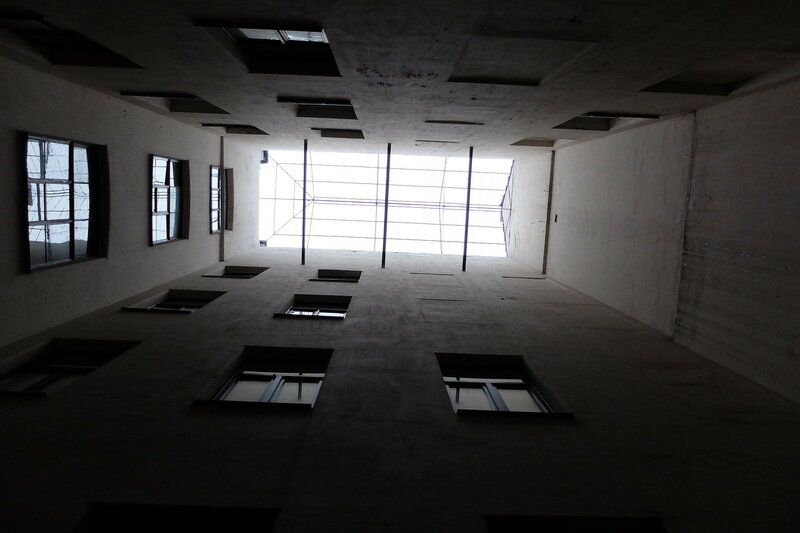
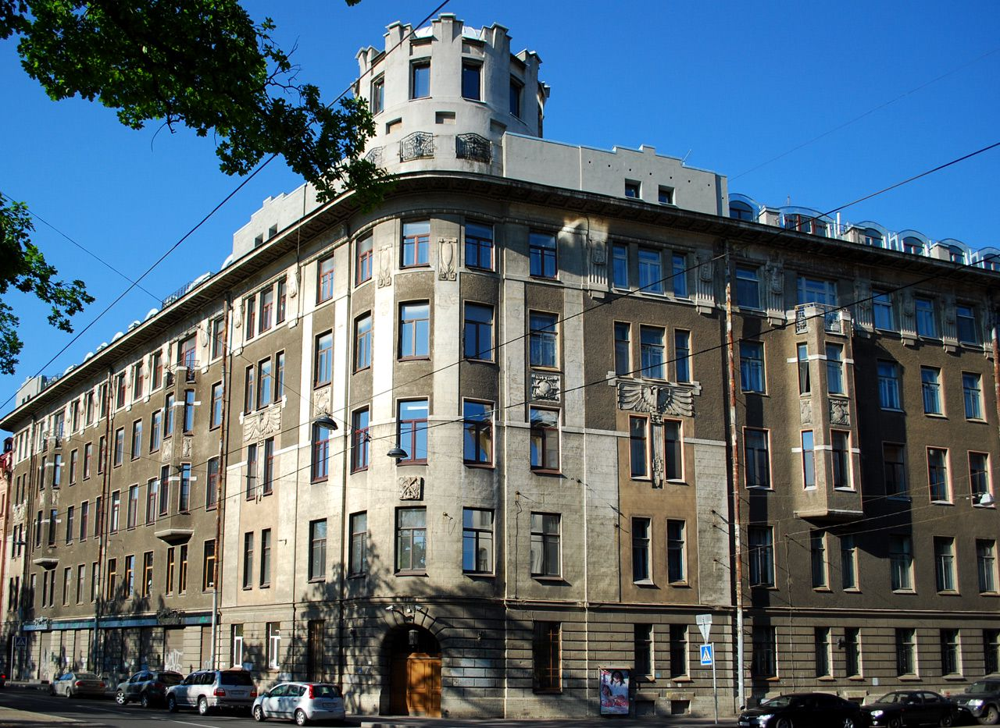
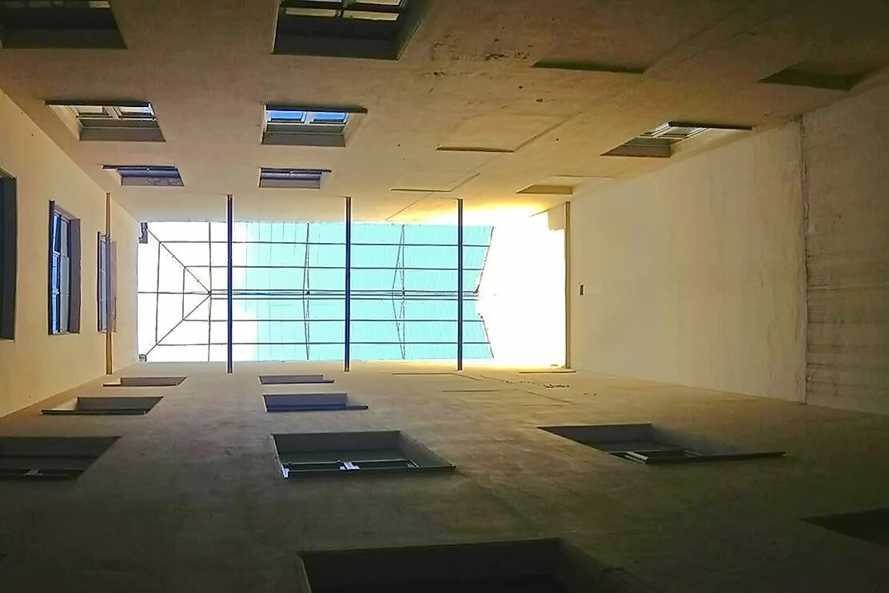
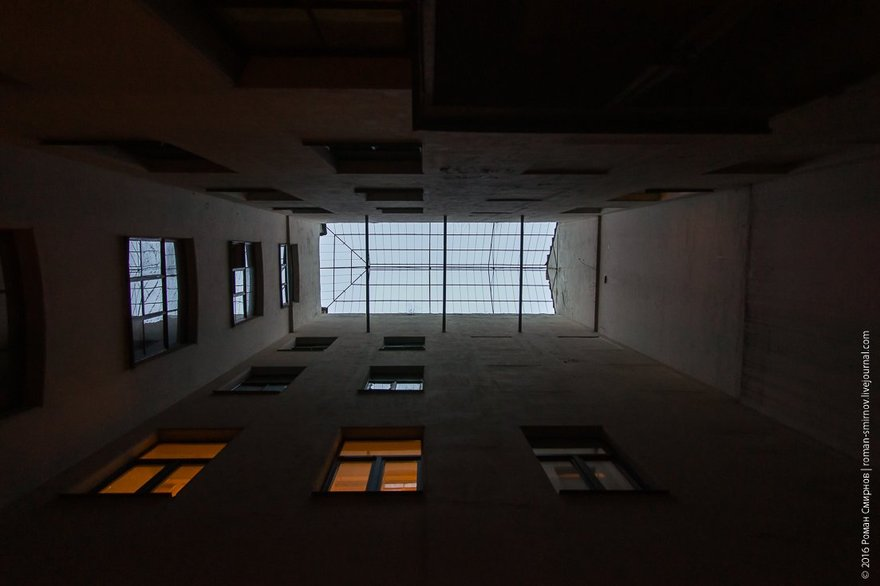

Волшебный двор духов

Легенда
На Васильевском острове скрывается удивительное место — крошечный двор-колодец размером всего 2×1,5 метра. Этот архитектурный курьёз — настоящий портал в мир духов. Считается, что здесь живут невидимые сущности, которые охраняют покой жителей Василеостровского района.

Попасть сюда могут далеко не все. Двери открываются только людям с чистым сердцем. Особая магия связана с Николаем Рерихом, знаменитым художником-мистиком, который жил в этом доме в начале XX века. Поговаривают, что духи остались здесь со времён великого мастера. Он общался с ними, и они до сих пор берегут это место.

Чтобы загадать желание, нужно встать в центре дворика, поднять голову к крошечному кусочку неба высоко над головой и мысленно выпустить мечту на волю. Говорят, желание обязательно сбудется. Стены дворика расписаны загадочными символами, здесь можно увидеть Всевидящее Око и другие мистические знаки.
Что было на самом деле
Двор принадлежит доходному дому Леопольда Егоровича Кёнига, построенному в конце 1870-х годов. Так называемые «дворы-колодцы» — типичное явление для петербургской архитектуры XIX века, когда застройка была плотной, а архитекторы стремились максимально эффективно использовать городскую землю. Это инженерно-архитектурное решение для освещения и вентиляции внутренних помещений.

Николай Рерих действительно жил в этом доме (в квартире № 1) с 1890-х по 1900-е годы. Художник увлекался восточной философией и мистикой, но никаких документальных свидетельств его общения с духами именно в этом дворе не существует. Росписи на стенах появились значительно позже — творчество современных энтузиастов и граффити-художников, а не сакральные знаки древности. Сложность доступа объясняется просто тем, что жильцы устали от бесконечного потока туристов, открывающих двери домофоном, шумящих и мусорящих в их парадной.
← Назад к карте